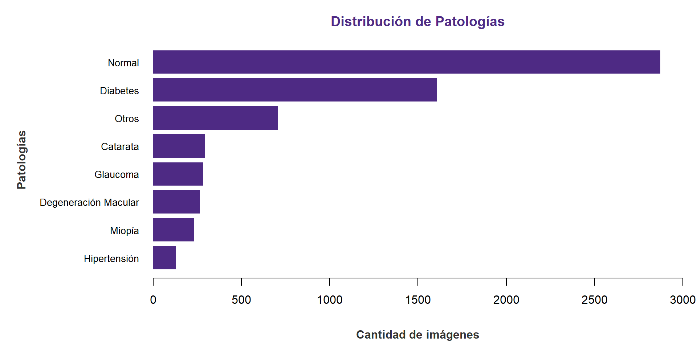

Proyecto Final: Deep Learning
Aplicación de Redes Neuronales
Universidad de Santiago de Chile
Planteamiento del problema
Nuestra Problemática
Problemática:
Carga global de morbilidad: Patologías como el glaucoma, la retinopatía diabética y las cataratas se encuentran entre las principales causas de discapacidad visual y ceguera a nivel mundial.1
Cuello de botella en el diagnóstico: El proceso clínico actual depende del análisis manual exhaustivo de imágenes del fondo de ojo.2 Este enfoque es:
Altamente consumidor de tiempo.
Propenso a una alta varianza y sesgo (variabilidad clínica entre observadores).
- Brecha de accesibilidad: Existe una severa escasez de especialistas para interpretar estos exámenes, limitando drásticamente el acceso a diagnósticos oportunos en regiones rurales o desatendidas.3
Justificación
¿Cuál es la importancia de resolver el problema?
Justificación:
Impacto Clínico (Prevención): La detección temprana cambia drásticamente el pronóstico del paciente y puede evitar el desarrollo de enfermedad ocular diabética en hasta el 90 % de los pacientes con diabetes.1
Impacto Operativo (Democratización de la Salud): Automatizar el cribado de imágenes rompe la barrera geográfica. Permite implementar sistemas de teleoftalmología rápidos y masivos, llevando diagnósticos de nivel experto a zonas remotas.2
Visión Sistémica (Oculómica): El ojo actúa como una ventana no invasiva al cuerpo. Resolver la clasificación automatizada de estas imágenes no solo previene la ceguera, sino que abre la puerta a detectar señales tempranas de enfermedades cardiovasculares, metabólicas o neurológicas antes de que presenten síntomas sistémicos.3
Estado del Arte
Era de la Observación Directa
El diagnóstico ocular evolucionó desde la representación mediante bocetos hasta la observación directa del fondo de ojo con el oftalmoscopio.1
1. Observación mediante bocetos

Fondo ocular. Van Trigt, A. C. (1853),
Dissertatio ophthalmologica inauguralis.
Dominio público.
2. Oftalmoscopio de Helmholtz

Oftalmoscopio de Helmholtz, ca. década de 1850.
Wellcome Collection (CC BY).
Primeras implementaciones tecnológicas y rigurosas
La evolución de la imagen retiniana permitió pasar del registro fotográfico a técnicas capaces de visualizar la circulación y las capas de la retina.1
1. 1886 — Primera fotografía del fondo de ojo

Jackman, W. T. y Webster, J. D. (1886),
Photographing the Eye of the Living Human Retina.
2. 1961 — Angiografía con fluoresceína

Secuencia de angiografía fluoresceínica de la retina.
3. 1979 — Oftalmoscopia láser

Imagen retiniana obtenida mediante oftalmoscopia láser de barrido (SLO).
4. Era digital — Fotografía digital y OCT

Estudio retiniano mediante tomografía de coherencia óptica (OCT).
Implementaciones Computacionales
Diagnóstico basado en Machine Learning.1
Máquinas de vectores de soporte (SVM).2
Random Forest.3
K-means.4
Extracción manual de características.5
Implementaciones Modernas
Deep Learning y Redes Neuronales Convolucionales (CNN) para analizar imágenes oculares.1
Desde 2016–2017, algunos sistemas alcanzaron un rendimiento diagnóstico comparable al de evaluadores profesionales.2
Transfer Learning para adaptar redes preentrenadas al diagnóstico de enfermedades oculares.3
Interpretabilidad del modelo para comprender qué información sustenta sus predicciones.4
Modelos fundacionales y generalizables, capaces de adaptarse a diferentes tareas y conjuntos de datos oftalmológicos.5
Diseño responsable e integración clínica de la IA, considerando validación, privacidad, equidad y supervisión profesional.6
Desempeño en la Literatura
En tareas diagnósticas específicas, algunos modelos han alcanzado un rendimiento comparable al de evaluadores profesionales:
Gulshan et al. (2016): Utilizaron Inception-v3 para detectar retinopatía diabética referible, alcanzando una sensibilidad del 90,3% y una especificidad del 98,1%.1
Ting et al. (2017): Validaron un sistema de Deep Learning para retinopatía diabética y otras enfermedades oculares, con sensibilidades entre 90,5% y 100% y especificidades entre 87,2% y 91,6%, según la patología evaluada.2
Clasificación multiclase: Chea y Nam (2021) utilizaron ResNet-50 para clasificar cuatro categorías de imágenes de fondo de ojo, obteniendo una exactitud promedio del 85,79% y un resultado máximo del 91,16%.3
Conclusión del Estado del Arte
Nuestra elección:
La literatura muestra que la extracción manual de características ha sido ampliamente desplazada por métodos que aprenden automáticamente la información relevante de las imágenes.1
Por esta razón, utilizaremos una Red Neuronal Convolucional (CNN) mediante Transfer Learning, con una arquitectura preentrenada por definir entre ResNet50 y VGG16.2
Esta estrategia nos permite:
Reutilizar características visuales aprendidas previamente, como bordes, texturas y formas, reduciendo el tiempo y los recursos necesarios para entrenar el modelo.
Mejorar la generalización del modelo y disminuir el riesgo de sobreajuste (overfitting) al trabajar con una base de datos relativamente pequeña.
Hipótesis y Objetivos
Hipótesis
Hipótesis: Un sistema de “evaluación preventiva” automatizado basado en Deep Learning permitirá clasificar imágenes de fondo de ojo con alta precisión, optimizando el tiempo médico y acelerando la derivación de pacientes de riesgo.
¿Qué entregaremos?: Desarrollaremos un pipeline computacional1 (script/modelo predictivo) que recibirá como entrada una fotografía del fondo de ojo de un paciente, la procesará, y entregará como salida la probabilidad de pertenencia a distintas clases de enfermedades oculares (Normal, Glaucoma, Catarata, etc.), actuando como un primer filtro automatizado.
Objetivos
Objetivo General:
Implementar una herramienta basada en Deep Learning para la clasificación automatizada de enfermedades visuales a partir de imágenes de fondo de ojo.
Objetivos Específicos:
Preprocesar la base de datos ODIR (redimensionamiento, normalización y aumento de datos) para adaptarla a los requerimientos de la red neuronal.
Desarrollar la arquitectura del modelo utilizando Transfer Learning1 (modelo predefinido) adaptado a clasificación multiclase.2
Entrenar el modelo computacional ajustando hiperparámetros3 para evitar el sobreajuste.4
Evaluar el rendimiento del modelo clasificador utilizando métricas estándar de la literatura (Accuracy, Sensibilidad, Especificidad).
Contexto de los Datos
Composición de la Base de Datos Ocular
| Clase | Etiqueta | Cantidad |
|---|---|---|
| Normal | N | 2873 |
| Diabetes | D | 1608 |
| Otros | O | 708 |
| Catarata | C | 293 |
| Glaucoma | G | 284 |
| Degeneración Macular Asociada a la Edad | A | 266 |
| Miopía | M | 232 |
| Hipertensión | H | 128 |
Gráfico de Frecuencias

Metodología Preliminar
1. Preprocesamiento de Datos
Antes de que el modelo pueda “ver” las imágenes, debemos estandarizarlas. Nuestro flujo de preprocesamiento incluye:
- Redimensionamiento (Resize): Ajustar todas las imágenes a un tamaño uniforme (ej. 224×224 píxeles).1
- Recorte (Cropping): Eliminar los bordes negros innecesarios de las retinografías para enfocar la región de interés.2
- Normalización: Escalar los valores de los píxeles de 0–255 al rango
[0,1]para facilitar el entrenamiento del modelo.3 - Data Augmentation: Aplicar rotaciones, reflejos horizontales (flips) y cambios de brillo para aumentar artificialmente el conjunto de datos y reducir el overfitting.4
2. ¿Por qué Redes Neuronales Convolucionales (CNN)?
Para seleccionar la arquitectura, comparamos su adecuación al tipo de entrada del proyecto: imágenes estáticas de fondo de ojo.
RNN/LSTM (Descartadas): Están diseñadas para modelar dependencias en datos secuenciales o temporales, como texto, audio y series de tiempo. Como nuestro modelo recibe una imagen estática, el procesamiento recurrente no aporta una ventaja directa.1
MLP (Descartadas): Requieren aplanar la matriz de píxeles en un vector, ignorando su estructura espacial y la relación de cercanía entre píxeles. Además, su conectividad total hace que la cantidad de parámetros crezca rápidamente con la resolución de la imagen.2
CNN (Arquitectura seleccionada): Aprovechan la estructura espacial mediante convoluciones, localidad y parámetros compartidos. Sus capas aprenden jerarquías de características, desde bordes y texturas hasta patrones o lesiones complejas, utilizando menos parámetros que una MLP completamente conectada.3
Precaución metodológica: Aunque son adecuadas para imágenes, las CNN pueden sufrir sobreajuste cuando se entrenan con conjuntos de datos médicos limitados o desbalanceados. Por ello utilizaremos Data Augmentation, Transfer Learning y técnicas de regularización.4
3. Arquitectura y Modelo Predefinido
No construiremos la red desde cero. Utilizaremos Transfer Learning con una arquitectura probada en el estado del arte (por definir entre ResNet50 o VGG16).
Flujo de Clasificación del Modelo:
Imagen de entrada: El modelo recibe una retinografía previamente redimensionada, recortada y normalizada.1
Extracción de características (backbone preentrenado): La CNN reutiliza conocimientos aprendidos previamente para identificar bordes, texturas, formas y posibles anomalías en el ojo.2
Resumen de características (Flatten o Global Pooling): Los patrones detectados se convierten en un conjunto compacto de números, llamado vector, que puede ser procesado por el clasificador.3
Clasificación (capas densas): Estas capas se entrenan con la base ODIR para aprender qué combinaciones de características corresponden a cada enfermedad.4
Resultado: El modelo entrega una probabilidad para cada diagnóstico. Se utilizará Softmax si cada imagen pertenece a una sola clase o Sigmoid si pueden coexistir varias enfermedades.5